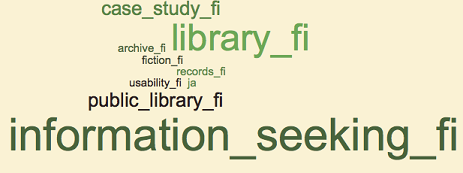

eRemembrance or eOblivion? International Conference on Society’s Memory Functions in the Digital World, University of Tampere, Finland, Tampere 23-24 November, 2015
From library and information science through information studies to information studies and interactive media: emergence, expansion and integration of information studies at the University of Tampere illustrated in word clouds
Ilkka Mäkinen, Kalervo Järvelin, Reijo Savolainen, and Eero Sormunen
Introduction
Our intention in this paper is to visualize the development of education and research in the discipline of information dtudies and interactive media at the University of Tampere, Finland. Past research, as well as our own long-time participation in the life of the discipline, has given us a rough picture of the development of the discipline from its early start until today. The rise of the research produced by the scholars in Tampere has received attention in the past years (McKechnie et al., 2005; Audunson 2005) as well as recently. Walters and Wilder (2015a) compared the scientific productivity among the world´s library and information science departments by focusing on the period of 2007-2012. Information studies practiced at the University of Tampere was ranked as third in the world. This good success did not come as a total surprise, as the external research assessments of the University had already witnessed good international visibility (Hakala and Roihuvuo, 2015).
The development of an academic discipline, however, cannot be totally described only by referring to research. The education of experts in the professional field is another main task of an academic discipline. This side has been much less analysed systematically. In this paper, we shall present a visualization of the development of the discipline. More specifically, we provide a visual demonstration of the historical development of information studies and interactive media of the University of Tampere from the beginning of the 1970s until the present. We shall consider in parallel the evolution of the curricula, the master’s theses of the students in the discipline, as well as the research publications. Our data consist of the words in course titles in the curricula, as well as in master’s theses and publication titles. The visualization will be word clouds. Our goal is to find out whether the development of the discipline can be visually outlined in word clouds, and, furthermore, if something new can be detected in the clouds.
The periodization used in the paper is based on past research and the intuition of the authors, who all have a long presence in the discipline, the department of library and information science at the University of Tampere. Among the authors, Järvelin and Mäkinen started as students in the department in 1972. At the end of the paper some concluding remarks are made and the strengths and limitations of the word cloud approach are discussed.
Historical background
Library and information science in Finland began as an academic subject with its own chair and department at the University of Tampere in the Faculty of Social Sciences in 1971. Before that time, a sub-academic diploma course on librarianship was provided by the College of Social Sciences in 1945-1960 in Helsinki, then in Tampere. In 1966, the College of Social Sciences was upgraded to University of Tampere. At the beginning of the 1990s, the chair and the discipline were renamed information studies. In a fusion with another discipline, that is, hypermedia studies, it became information studies and interactive media in 2008. In an organization reform of the University of Tampere, the discipline and the chair were merged into the new School of Information Sciences (with Computer Science and Mathematics). The department as the unit disappeared, and was substituted by the degree programme in information studies and interactive media, while research was organized under the Tampere Research Centre for Information and Media.
Mäkinen (2007) has published in English a historical overview of the development of the Department of library and information science at the University of Tampere. The beginnings of the discipline have been addressed in Finnish in a number of papers by various authors (see references in Mäkinen, 2007). The thematic composition of the publications produced by Finnish scholars in the discipline has been statistically analysed by Järvelin and Vakkari (1993) and Kerttula (2000).
Up until the beginning of the 21st century, the Finnish library and information science education and research differed considerably from the rest of Scandinavia, the nearest cultural frame of reference for Finland, whereas there were many resemblances to the development of the discipline in the UK and, especially, the USA. Until the 1990s, library education in Denmark, Sweden and Norway was placed in independent library schools or attached to other similar institutions below the university level. In Finland, a professor’s chair in library and information science was established as early as in 1971 at the University of Tampere, and later at the Åbo Akademi University in Turku in 1982 and Oulu University in 1988 (Mäkinen, 2007).
The milestones of the development of the discipline at the University of Tampere are specified in Table 1 below:
| Decade | Organizational milestones |
Strategic milestones |
|---|---|---|
| 1940s-1960s | Professional education in Librarianship (Helsinki 1945-1960; Tampere 1960-1970) | |
| 1970s | 1971 Dept.of library and information science starts in the Faculty of Social Sciences; 1st Professorship in the Nordic countries 1977 Marjatta Okko nominated as Professor,- 1979 Association of library and information science started |
1973 1st master's thesis 1977 1st licentiate’s thesis |
| 1980s | 1981 Journal of library and information science (Informaatiotutkimus) started | Debates onthe identity of library and information science as an academic discipline 1983 1st two doctoral theses |
| 1990s | 1991 Name changed to Dept. of Information Studies,- 1991 Information Retrieval Lab started Research groups organized 1997 Records management education started |
1990-91: focus areas defined: information retrieval information seeking information management 1991 CoLIS conference 1996 ISIC conference Nordic doctoral schools National doctoral schools |
| 2000s | 2001 Department moves to the Faculty of Information Sciences 2008 InformationStudies and Hypermedia Studies merged into INFIM 2008 Tampere Research Center for Information and Media (TRIM) started 2009 Degree programmes integrated with Interactive media, INFIM 2009 Degree programmes integrated with Interactive media |
2002 SIGIR conference 2007 Memornet,research network established |
| 2010s | 2011 INFIM and TRIM merged into the School of Information Sciences | 2011 iSchool membership 2012-2015 Memornet doctoral programme 2013 School-wide focus areas |
Method and data
The development of education and research in the discipline was analyzed by creating word clouds. The data used in the production of the word clouds were arranged under three themes: the curricula, master’s theses and the research publications, and five periods for which the data were gathered. The sample periods are situated roughly at the beginning of the decades since the early 1970s. The decades can be considered as meaningful periods that have their specific characteristics. The sample years for which the data were gathered can be motivated in the following way:
- The first period, 1971-1973, is a natural starting point, because the activities of the department of library and information science began at that time. The first curriculum was designed and the first master’s theses were approved; the production of research publications was practically non-existent in the period, and therefore this period is not included in the publications word cloud.
- The second period, 1981-1983, is characterised by a search for the identity of library and information science as a discipline and an attempt to be recognized as a full-fledged academic discipline producing its first doctoral dissertations and becoming a part of the international community of library and information science.
- The third period, 1991-1993, is placed in times when the focus areas of the development of the discipline and the research were defined, as well as the development towards an identity as information studies.
- The fourth period, 2001-2003, presents the last years of information studies as a traditional and independent discipline; at that time, the trends started at the beginning of the 1990s were fully developed.
- The fifth period, 2010-2015, reflects the new disciplinary identity as information studies and interactive media, an integral part of the School of Information Sciences.
The distribution of the words among the sample periods is displayed in Table 2. The figures represent the number of words in the original languages after the morphological normalization but before the construction of phrases (these procedures will be explained below).
| Period | Sample years | Number of courses | Number of words |
|---|---|---|---|
| 1970s | 1971-1973 | 52 | 172 |
| 1980s | 1981-1983 | 49 | 117 |
| 1990s | 1990-1994 | 109 | 217 |
| 2000s | 2001-2004 | 115 | 219 |
| 2010s | 2010-2015 | 130 | 428 |
| Period | Sample years | Number of theses | Number of words |
|---|---|---|---|
| 1970s | 1974-1975 | 21 | 88 |
| 1980s | 1982-1983 | 19 | 94 |
| 1990s | 1991-1993 | 43 | 227 |
| 2000s | 2003-2004 | 41 | 150 |
| 2010s | 2013-2014 | 53 | 253 |
| Period | Sample years | Number of publications | Number of words |
|---|---|---|---|
| 1970s | - | - | - |
| 1980s | 1982-1983 | 20 | 62 |
| 1990s | 1991-1993 | 70 | 222 |
| 2000s | 2003-2004 | 175 | 274 |
| 2010s | 2013-2014 | 193 | 399 |
The periods follow each other approximately by the intervals of ten years, which means that real changes in the curricula, master’s theses and research publications can be expected to become visible. We are using for the most part three-year periods allowing the inclusion of two curricula and more research publications than one-year periods would yield. This ameliorates the representativeness of the analysis, and illuminates better the focus areas.
Our approach is based on a quantitative analysis of the words and the visualization of the results in word clouds. Based on these, we aim to explore whether the public goals of planning and development as well as our intuitive picture of the development are reflected in the word clouds. For example, the analysis of the curricula is based on the words in the titles of the courses in the curricula. The individual words in the titles of the courses are reduced to their morphological normal forms and plurals into singular, if possible.
Normalization is important, because of the high rate of inflected word forms in the Finnish language. The compound words of the Finnish language, however, were not broken into their constituent words. Conventional phrases, such as library and information science, were formed (e.g., Library_and_Information_Science) so that they become visible in the word clouds. Numbers, pronouns, conjunctives and other semantically insignificant words were discarded using a stop list. The rest of the words were considered as content bearing and they were fed into the word cloud tool that turned the words into word clouds, where the words are rendered in smaller or bigger font in direct proportion to their frequency in the data. The word clouds were analysed qualitatively in order to bring forth the focus areas and their changes from one period to another. The emphasis is not on the application of formal statistical methods but on the visualization of changes.
The presentations of the words included in the titles of the master’s theses and research publications were also converted into word clouds and discussed in a similar manner. The three groups of data represent different aspects of disciplinary development, and one may expect that they reflect influences stemming from 1) the professional field and the society (legislation, Ministry of Education), 2) the academic community and the self-identity of the discipline, and 3) the persons active in the department and discipline and their personal goals and preferences. However, we have restricted the naming of persons to a minimum.
The word cloud processor, WordItOut, is easy to use. For the purposes of this paper we have chosen a rather high threshold for the inclusion of words into the word clouds, which effectively reduces the words displayed. This was done in order to gain an overview. With too low a threshold word clouds become difficult to interpret. We admit that many important words are lost from view in this manner, but believe nevertheless that the most important trends and changes become more apparent.
In the interest of supporting an overview, we have limited the number of words in the clouds to 10. This means that the most recent periods are at a disadvantage, because the number of words in the basic corpus differs from year to year and from one category to another. We alleviate this bias by indicating in the text words that would become visible if the threshold was lowered concerning the more recent periods. In this way some words representing new emerging fields or weak signals can be taken into account.
In order to help non-Finnish readers make sense of the word clouds we have translated the Finnish and Swedish words and phrases into English. These words are provided with the suffixes _fi or _swe to separate them from the words originally in English.
Hypothesis
It is to be expected that the influence from the professional field would in some way be reflected in the curriculum and in the master’s theses, too. Many students choose research topics that are connected with or stem from their professional experiences — often the students are taking part in professional life when they are writing their master’s thesis. The planning process of the curriculum often includes some interaction with the professional field, although the academic community in the end defines itself the curriculum. On the other hand, strong personalities with a clear vision of the long-term development of the field may produce curricula that differ from the expectations of the professional field.
The most important single factor affecting the variety of themes of the master’s theses is the personnel, usually professors supervising the master´s theses and teaching master courses. The writing of the master’s thesis is a symbiotic process involving the student and the professor alike. The thesis seminar on the master’s level is in a key position in defining the kind of research tradition into which the student is introduced.
The development in research and the definition of focus areas as well as the general trends in the methodological atmosphere influence in the end the choice of the themes of master’s theses. The supervisors must themselves first acquire their credentials in research in order to be able to supervise research of certain themes. This may take time. Sometimes the master’s theses are used as probes to determine possible new directions of research. The research of the professors and the master’s theses are in constant interaction.
The variety of the research publications is very much dependent on the preferences and competences of individual researchers, but even their behaviour is influenced by traditions and cooperation in the discipline. In the case of library and information science in Tampere, the building of the research groups strengthened research in the respective areas. For example, the Finnish Information Retrieval Expert Group (FIRE) established in 1991 enhanced the development of research in information retrieval in Tampere. Participation in a research group directs effectively the choice of research themes of the younger colleagues.
We hypothesise that the general development in the three areas proceeds as follows: the curriculum is constructed in a complex interplay between the library legislation that in Finland has set the basic framework of competences for the library personnel, demands of the professional field, and the priorities of the academic personnel. We may expect that the themes of the curriculum should be reflected in the themes of the master’s theses at least gradually, but the master’s theses are strongly influenced by the professional orientation of the students as well. The strongest effect on the choice of the master’s theses’ themes (as well as the methodological approaches) comes from the areas of interest and competence of the teachers. The choice of the themes of the publications depends most strongly on the areas of interest and competence of the teacher-researchers. This category may be most sheltered from the pressures on the part of the professional field, if the researchers themselves do not see this relationship as fruitful.
One obvious hypothesis is that the extensions of the discipline by new subject areas (records management from 1997 onwards, and game studies from 2008 onwards) gradually become visible in the word clouds. However, this may happen at different paces in different activities. New themes are expected to appear first in the curriculum since it requires only a decision by the faculty to revise the curricula. Students’ preferences affect the themes of master’s theses and the volume of research is largely dependent on the success in gaining external funding.
We know from our own experience that there was a profound change in the paradigm of library and information science in Tampere during the late 1980s and the beginning of the 1990s. The documented historical presentations of the development also support this conception (Mäkinen 2007). We should expect this to be visible as a corresponding change in the word clouds.
Analysis and results
Pioneer years 1971-1975
The word clouds describing the developments within the first period focus on the curriculum at the bachelor and master’s levels and on the master’s theses. This is because of the low number of research publications produced in the early 1970s. Similar to other periods reviewed in the present study, we took into consideration at least two different curricula (1971-1972, and 1972-1973). They were the first curricula of the new chair of Library and Information Science. The production of master’s theses began to run effectively only after a couple years, so we chose the years 1974-1975 (when the number of master’s theses was twenty-three). The word clouds presenting the first period are depicted in Figure 1. The left side of Figure 1 depicts the curricula, while the right side provides the word cloud for master´s theses.
|
|
|
Library and information science struggled its way to an academic discipline in the Faculty of Social Sciences from the deeply rooted professional practices and education that was aimed to produce librarians especially for public libraries. Library education was available at a special sub-academic department of the University of Tampere until 1971. During the first years of the academic chair the professional practices and traditions were deeply interwoven in the curricula. The institutions (libraries and information services), their practices and services as well as their development defined much of the teaching that from the start was aimed at educating professionals both for public and academic libraries. Some new additions, such as computers in the service of library work found their place in the curriculum.
The aim to educate librarians both for the public and academic libraries is reflected in the curricula in the different versions of the word library, which represents both the public and the academic libraries. This was important for the discipline, because especially the directors of the academic libraries were suspicious about the quality of the graduates that the discipline produced. Library is complemented by words that refer to the information services and systems, which represent the new directions in the professional field. The phrases information material as well as information system stem from the widening variety of material transmitted by the libraries. An interesting phrase is information need, which reflects the pioneering work in the research of information needs of the research and development personnel done, for example, by Elin Törnudd, in the fifties (Törnudd, 1955; 1959).
The case is different in the title words of the master’s theses in the first period. Their themes were purely library-centred. The titles including some variant of the word library dominated overwhelmingly. The word year comes from a number of master’s theses monitoring recent developments in the library world or, for instance, the employment process of the librarians graduated from the university. Thus, even this word is closely tied to the libraries. It is evident that the personnel, many of whom had already worked in the sub-academic diploma course, inspired their students to write especially about public libraries.
In the Finnish library history the beginning of the 1970s was a feverish period of construction (Mäkinen, 2001). The progressive Public Library Law of 1961 was beginning to be felt to its full effect. Despite the favourable legislation, the 1960s had been a decade of modest growth to a great extent just because of the lack of professional personnel that the chair in library and information science was supposed to educate. The library emphasis of library and information science education in Tampere was natural, and part of the rapid public library development. The graduating students had no difficulties in finding positions in libraries. In this light it is a matter of course that themes related to public libraries were the ones that the teachers recommended for their students, themes that they themselves would have been researching, if they had had time in the turbulent and chaotic first years of the chair.
The number of research publications during this feverish first period remained so low that publications have been omitted here. According to Järvelin’s and Vakkari’s (1989, 96; 108) content analysis of the research publications in library and information science produced in Finland, the number of research publications was only nineteen in the years 1970-74, a quarter being produced in Tampere. Research in library and information science started in practical terms from zero.
Still, the research activities of the department were under a conscious process of planning and development. One of the tools was the research policy programme adopted in 1976 (Tutkimusohjelma, 1976). Development prospects started gradually to produce results, when the first permanent professor, Marjatta Okko, was nominated for the chair in 1977, thus six years after the establishment of the chair. This reflects the low level of research in the field in Finland at that time: there was a lack of qualified people for the chair. Prof. Okko worked hard to acquire personnel resources for the chair as well as funding for the research. She also was in a key position when the Finnish Association for Library and Information Science was established in 1979.
To sum up: the 1970s was for the library and information science in Tampere a period of institutionalisation, establishing the basic structures, and creating the Finnish library and information science community.
Searching for identity 1981-1983
This sample period is characterized by a search for the identity for the discipline and a struggle to be accepted as a full-fledged academic discipline. Important steps in this direction were taken when the first doctoral dissertations in library and information science were accepted in 1983. The word clouds presented in Figure 2 provide an overview of the main content of curricula, master theses, and publications.
|
|
|
|
The professional emphasis continues during this sample period. In the curricula (1981-82, and 1982-83), the institutions, the library service institution and information service institution, both as an independent organization as well as an activity of the library are visible, but it is worth pointing out that the plain word library is not among the top words. This means that there was a greater need to emphasize a more abstract perspective even in the curricula than in the previous period. Both constituent parts of the chair title (library science, information science) are well represented. A search for and need for emphasizing the identity of the discipline was visible.
The master’s theses continue with even greater emphasis on the professional track. The dominance of the word library is crushing. This remains true, even if we lower the word frequency threshold to two (see Figure 3). Almost all of the words in this cloud are either variants of the word library or related to it. Lowering the level of filtering, thus, does not change the overall picture.
Figure 3. Word cloud for master’s theses 1982-83 with word frequency level 2+
The same applies to research publications (Figure 2, the third cloud). At this stage, there was very little publishing in languages other than Finnish. The first dissertation in the Finnish library and information science, a study of the information acquisition behaviour of journalists, was written in Swedish (Ginman, 1983), the second official language of Finland. However, the title words of the thesis were not among the top selection, because there were not enough other publications in Swedish using those words.
The title words in publications reflect without doubt a public library-centred research field, although some nuancing comes from the word research, maybe a sign of disciplinary self-reflection. The words book and reading reveal a cultural sociological direction in the research. The first Finnish-language dissertation in library and information science by Pertti Vakkari (1983) was titled 'Kirjojen lukeminen ja yleiset kirjastot' [Book reading and the public libraries], and his other publications lift this kind of word among the top selection.
What was to change the scene of research publications was the establishment of the Finnish journal for library and information science, called Kirjastotiede ja informatiikka [Library and Information Science], and published by the Finnish Association for Library and Information Science. The first issue was published in 1981. The teachers in the Department of library and information science published actively in the new journal. During the previous decades, research in library and information science was mostly conducted in the large academic libraries, especially in the Helsinki University Library (now the Finnish National Library) and the University of Technology Library. However, in the 1980s, an increasing part of library and information science research was done in the academic departments, especially in Tampere. According to Järvelin and Vakkari (1989, p. 96; p. 109), the total number of library and information science studies published in Finland during 1980-84 was 104. Of these, 38% were produced in Tampere and the new library and information science department in the Åbo Akademi University in Turku.
In reality, there appeared a paradigm shift in the Finnish library and information science conception during the 1980s. It will be visible in the next sample period. The issue centred on the question as to whether the basis of library and information science conception should be placed in the institution, i.e., the library, or people´s information needs and information-seeking behaviour. Järvelin and Vakkari (1981; 1988) defended a viewpoint that the founding concept of library and information science research should be information seeking. Their ideas anticipated the great paradigmatic shifts in the overall theoretical approach of library and information science, such as the user-centred perspective on information seeking research advocated by Dervin and Nilan (1986). Their initiatives were met with strong opposition among those who maintained that the founding concept be the library institution. Internal discussion and controversies in the Finnish library and information science community concerning the path to be chosen for the field have been discussed elsewhere (Mäkinen, 2002; Mäkinen, 2007). Part of the paradigm shift manifested itself in the preference for publishing in international journals, which, of course, meant using the English language.
Paradigmatic change 1990-1994
The new paradigm became visible in the curriculum during the latter part of the 1980s, although not as strongly as one would expect. In fact, it is not easy to express an abstract conception in words in the titles of university courses. The variety of the top words reveals the new direction as is seen in Figure 4. The most frequent word in the curriculum of this sample period is information retrieval accompanied by information storage, but this does not necessarily mean any profound change in the conception. Information retrieval can be considered as a separate, well-defined area of teaching that has to be taught in any case, and this period was the great breakthrough for computers and the Internet.

|
|

|
Words, such as information need, knowledge work, information management, and information seeking reflect the general change in the approach to what was to be taught to the students, and the theoretical basis for this education. The absence of the word library is, of course, noteworthy — and the marginal role of library was used at the time as an argument against the library and information science educational policy adopted in Tampere. The library institution is visible, though, in the phrase collection research.
The top positions in the word cloud for master’s theses are occupied by public library, reflecting the institution-centred and professional paradigm, and information seeking that marks the rise of the information seeking research and its appeal to the students. The word Namibia is an echo from the period, when the department of library and information science at the University of Tampere hosted a small group of African students, refugees from South Africa and Namibia, involved in the struggle against apartheid. There was a Namibian-Finnish master’s seminar focusing on themes related to Namibia.
The most important sign of the on-going paradigm shift is visible in the cloud representing research publications. With the minimum word frequency 4+ we get only one word, query, in the word cloud. This is a clear signal of the dynamic period of information retrieval research. The word is in English, which shows that publishing in information retrieval was rapidly shifting into international forums. If we lower the minimum word frequency to 3+, we get 13 words or phrases in the word cloud (Figure 5).
Figure 5. Word cloud for publications 1992-93 at word frequency 3+.
Different versions of the name of the discipline in Finnish and English, as well as the word analysis, show that a discussion on the nature of the discipline was going on. Especially Järvelin and Vakkari performed and inspired research in content analysis of the library and information science publications in Finland, the Nordic countries and elsewhere (e.g. Järvelin and Vakkari, 1993; Aarek et al., 1992; Tuomaala et al., 2014). Information seeking is also visible in this word cloud, but in Finnish. The international orientation of research in information seeking was still ahead.
Words, such as deductive, database, and, of course, query, indicate booming research in information retrieval by young scholars at the Department of Information Studies as the chair was renamed. Query also indicates that information retrieval was done in databases. These were the last years before information seeking and retrieval moved into a new environment, the Web.
An important part of the reconfiguring of the Department was the defining of the three focus areas for the curriculum and research. At this point it was natural that two of the focus areas were information seeking and information retrieval. The third focus area was at the start to some extent more vacillating, but in the long run information management stabilized its position, because there were people with competence in this area and not so many in the competing area, knowledge work. As we have seen, information management was visible in the curriculum, but so was also knowledge work. Nevertheless, information management as a priority area remained somewhat marginal despite a good start.
The name of the discipline in Tampere was changed into information studies in 1991. This echoed the similar change in the name of the department at the University of Sheffield (Benson and Willett, 2014). The name of the Tampere department was officially changed in 1994, because it involved some legal technicalities. Another important innovation in 1991 was the establishment of the Finnish Information Retrieval Expert group (FIRE), and the Research Laboratory for Information Retrieval. Other research groups followed: REGIS or Research Group on Information Seeking in 1994 and REGIM, Research Group on Information Management in 1996. (Today both of these groups are incorporated into RIME, Research Group on Information and Media Practices, also including research in records management.)
Further visibility for research in Tampere was to come with the successful branding of two series of international conferences. The first conference named Conceptions of Library and Information Science (CoLIS) was organized in 1991 to commemorate the 20th birthday of the Department of library and information science in Tampere. Another conference brand Information Seeking in Context was established in Tampere in 1996. This time the conference celebrated the 50th anniversary of the Finnish education in librarianship. The sub-academic education of librarians had started in 1945. The theme of the conference was chosen according to one of the features that in Tampere was felt to be central in the study of information seeking, namely the context. The conferences also contributed to the internationalisation of research and research publishing in Tampere.
Information studies for the new millennium 2001-2004
This is the last period, when Information Studies still was a traditional independent discipline in Tampere. The word clouds presented in Figure 6 illustrate the main content of curricula, master´s theses and research publications.
|
|
|
|
The first years of the new millennium showed that the development of information studies in Tampere was a tango for two, information retrieval and information seeking with a certain advantage for information retrieval. In the curriculum, information retrieval is dominating, partly because it is both a well-defined area with a firm application in the practical work life and a strong area of research.
Still, there is an important new element in the curriculum. One of the priority areas, information management, was somewhat marginal initially, because it was not all the time represented at the department by strong personalities among the professors. At the beginning of the new millennium, information management got a new start, when records management and higher education in archival science were placed in the Department. This also was the start for the on-going integration process of memory institutions and the disciplines studying the phenomena they are dealing with. Words in the curriculum cloud, such as records and records management are tokens of this. The forms of information management are, though, visible in the phrases document management and information management.
Words in the titles of the master’s theses, on the other hand, show the strength of information seeking as a branch of information studies. By the early years of the new millennium, information studies had really become the science of information seeking as Järvelin and Vakkari had advocated in the 1980s. The success of information seeking among the students writing their master’s theses tells both of the attractive power of the representatives of information seeking among the professors and also about the methodological currents in the academic world. The qualitative methods in social research became dominant during the 1990s. The word library has not totally vanished from the titles of the master’s theses, but this is the lowest point so far in its popularity.
Information retrieval has never been as dominant in the master’s theses as it is in the publications. A great majority of students do not share the informaton technological orientation required in the study of information retrieval. In the master’s theses of the years 2003-04 information retrieval and information seeking seem to be in balance. A specific aspect of information retrieval is visible in the master’s theses cloud, namely the query performance analyser, which was an innovation developed at the Department, and experimented in master’s theses. Noteworthy also is that the word digital appears in the titles of the master’s theses.
Information retrieval is the king in the word cloud for the publications. With this rather low level of filtering (word frequency 4+), all the words in the cloud depicted in Figure 6 represent unambiguously information retrieval, with the exception of the word information that may have been included in the titles in information seeking as well. Otherwise, the FIRE researchers were producing publications at an accelerated pace. Words, such as language, cross-language, and indigenous stem from titles in papers on cross-language information retrieval. Another successful field of research was the evaluation of information retrieval performance (evaluation). Even the only word in Finnish in this selection is information retrieval. Symptomatically, the ACM SIGIR conference, the international flagship conference in information retrieval, was held in Tampere in 2002. Only if we lower the word filter level to 2+, other fields emerge, as depicted in Figure 7 below.
Figure 7. Word cloud for publications 2003-04 (word frequency 2+).
We must admit, however, that part of the visibility or invisibility of areas of research depends on the dispersion of terms and phrases used. Words and phrases, such as information seeking and information searching belonged to the information seeking paradigm at the department during the period. The challenge of information seeking research was that it had already become an all-encompassing research paradigm that was present in many studies without being explicitly named. The same camouflaging tendency was also to become notable concerning information retrieval in the last period studied here.
Merged and integrated 2010-15
The latest period shows the discipline again transformed into Information Studies and Interactive Media and as part of the School of Information Sciences. Information Studies and Interactive Media (former hypermedia studies) were merged in 2009 and now (2015) they have a common curriculum. Research was organized into the Tampere Research Centre for Information and Media. In 2011, the new department was incorporated into the School of Information Sciences. Figure 8 depicts the developments of the final period of our study.
|
|

|
|
The fusion of the two disciplines is visible especially in the curriculum and research publications. The loudest speaking phrases in the curriculum word cloud are information retrieval, interactive media and records. The basics of information seeking, knowledge sharing, personal information management and information retrieval were placed under a common umbrella of information practices in the introductory phase of studies. This is why information seeking is not visible in the curriculum on this level of filtering. Game studies, which is one of the main areas of interactive media is represented by two words, game and game studies in the curriculum.
Information seeking dominates the master’s thesis word cloud reflecting both the high-class research done by people in the discipline and the methodological preferences of the students. Information retrieval is not visible on this level of filtering in the master’s theses word cloud. What is noteworthy is the return of the library, both as library and public library. This is partly explained by the challenges meeting the library institution, which invite research, and a new line of research on how users select fiction in public libraries. Records management emerges as a small but strengthening theme in master’s theses.
Due to the expansion of research, the filtering threshold is rather high (7+) in the word cloud of research publications. Only words in English exceed the threshold, which reflects the urge to publish internationally, even though books and papers are published in the vernacular as well. The strong role of game research is a new phenomenon. The number of young researchers and the volume of research explain the visibility of game research in this kind of visualization. Another factor that might explain the growth is that game research has not yet developed into specialized sub-fields operating with their own diversified terminologies. That is why game research is cumulating under the large umbrella of game (cf. information in information studies). Contrary to game studies, the other new subject field, records management does not appear in the word cloud of research publications.
The dilution process that was mentioned above concerning information seeking has apparently affected the research in information retrieval as well, which is still visible but not as prominently as before. There are plenty of publications in IR but their titles do not necessarily contain the phrase information retrieval any more. The same is still the case regarding information seeking, although the top researcher in the field in Tampere, Reijo Savolainen was ranked fifth in the list of top contributors of library and information science in Walter’s and Wilder’s study (Walters and Wilder, 2015b). One of the recent fields of research that may have been shadowed because of this tendency is interactive information search. Another emerging field of study that has become apparent is research in information literacy (student, learning). Social and collaborative represents, among other possibilities, research in social media, and group work in information literacy instruction.
If we lower the word filter to 3+ for the words in the titles of publications (Figure 9), the phrase information seeking becomes visible. Some symptomatic words in Finnish also appear (virtual world_fi; library_fi; game_fi; game studies_fi; learning_fi; teacher_fi; time_fi; future_fi) suggesting that some researchers also favour publishing on domestic forums, both on the few academic ones and on the more numerous professional ones. Reading, fiction and book again represent a strong current of research on the selection of books by readers in the public libraries. Nonetheless, the lowering of the filtering threshold does not fundamentally change the picture presented in Figure 8 above.

Figure 9. Word cloud for publications 2013-14 (3+).
Conclusion
The analysis of the word clouds shows that the development of library and information science and its successors in Tampere can be meaningfully visualized using a word cloud processor. Historical studies, personal observations and word clouds do not contradict each other. All branches of the discipline are well represented in the curricula. As predicted, the paradigm shift becomes apparent in the 1990s especially in research. On the other hand, it is clear that brilliant individual contributions may be lost from sight with this kind of approach.
The word clouds also bring forth some specific features that illustrate the unsolved problems in the development of the discipline in Tampere. On the one hand, despite its strong position in research, information retrieval is not among the popular master’s thesis themes. This may be due to a mismatch between students’ orientations and the information technology skill requirements of retrieval research. Neither do the courses in information retrieval, even if well visible in the curricula, give the amount of knowledge in information retrieval necessary for making research at the master’s level, especially when the students are not particularly eager to attend them. On the other hand, the nature of research in information retrieval should in the long run profit from the Bologna process. If students can relatively freely choose where they continue studies after the bachelor level, students from, for example, computer science may opt for master’s level studies in information retrieval. This was also one of the ideas behind the creation of the School of Information Sciences.
Information seeking, which is prominent in the master’s thesis, is numerically not so visible in the research output, although individual researchers are on the top internationally. There seems to be a boundary between the master’s theses and research. As a predominantly qualitative form of research, information seeking has profited from the general methodological currents in the social sciences. It has also been able to respond better to the intuitive expectations of how research in information studies can support professional interests.
The progress of two recent extensions to the discipline, that is, records management and game studies, showed up differently in our word cloud analysis. Records management started from scratch in late 1990s, and has expanded as an academic educational programme but lacks funding for research. Game studies was already a research group when it became a special part of BA, MA, and PhD degree programmes, and has been successful in gaining external funding for research. Game studies has become visible in the research publications and the curricula, although not yet in master’s theses. The comparison of these two raises an issue on how institution (records management and archives) and phenomenon (games) oriented fields are able to grow as academic communities.
During the forty-five years since the establishment of the chair in library and information science a profound change has occurred in the curricula, the master’s theses and research publications. From a homespun library school there has been an evolution, or rather a revolution, towards a versatile iSchool with an international profile, from publishing in the domestic forums towards publishing in the international top journals, from training the students solely for a library profession towards educating for a wide range of jobs in the information field.
About the authors
Ilkka Mäkinen is Lecturer in Information Studies at the School of Information Sciences, University of Tampere, FIN-33014, Finland. His research interests concentrate mainly on library and information history and the history of reading. He may be contacted at ilkka.makinen@uta.fi.
Kalervo Järvelin is Professor of Information Retrieval at the School of Information Sciences, University of Tampere, Finland. His main research interests include information interaction and information retrieval. He may be contacted at kalervo.jarvelin@uta.fi
Reijo Savolainen is Professor at the School of Information Sciences, University of Tampere, Finland. His main research interests include information practices, the use of social media in everyday contexts and theoretical issues of information behaviour research. He may be contacted at Reijo.Savolainen@uta.fi
Eero Sormunen is currently Professor at the School of Information Sciences, University of Tampere, Finland. His current research interests focus on information interactions in learning, and pedagogy in information literacy instruction. He may be reached at eero.sormunen@uta.fi